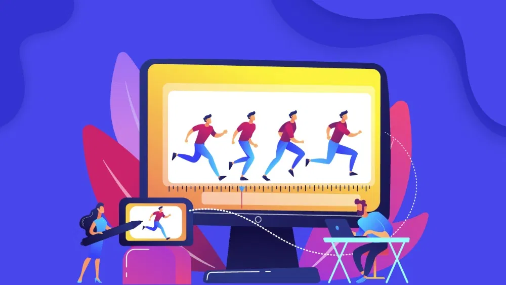
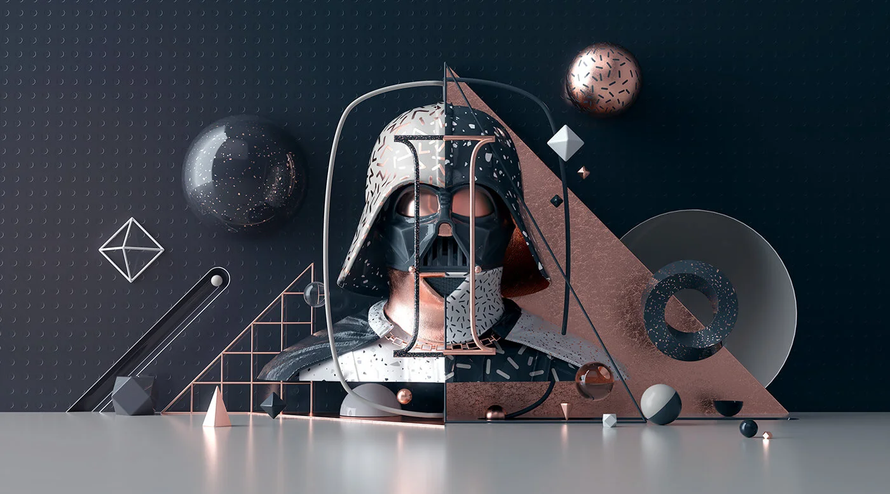

Let’s be honest for a second, the digital world is incredibly noisy. It’s like trying to have a deep conversation in the middle of a packed football stadium. Everyone is shouting, everyone has a "limited-time offer," and everyone is fighting for that precious half-second of a user’s attention. If your brand is still relying on static images and long-winded paragraphs to tell its story, you aren’t just behind the curve; you’re practically invisible. This is why motion graphics services have moved from being a "nice-to-have" luxury to an absolute survival tool for modern businesses.
At Webcore Digitals, we believe that movement is the secret sauce to making people stop scrolling and start paying attention. Whether you are a scrappy startup or an established enterprise, adding movement to your visual identity changes the entire vibe of your communication. You might be thinking how thou? Let's dive deeper and see how movement or motion graphics urge people to stop scrolling and start looking.
Have you ever wondered why you can sit through a two-minute animated video but struggle to read a two-paragraph email?
It’s not just laziness; it’s biology. The human brain is hardwired to track movement. Back in the day, movement meant a predator or a snack. Today, it means your brand has something interesting to say.
When you invest in professional motion graphic design services, you are tapping into this primal instinct. You aren’t just showing an ad; you are creating a visual experience that the brain finds hard to ignore. Static images are great, but they are passive. Motion is active. It pulls the viewer in, guides their eyes exactly where you want them to go, and keeps them hooked until the final frame.
One of the biggest hurdles businesses face, especially in the tech and B2B sectors, is explaining what they actually do. If your product involves complex algorithms, intricate logistics, or invisible software processes, a photo of a person on a laptop isn't going to explain it.
This is where animation and motion graphics services really shine. You can visualise the invisible. You can show data moving through a cloud, or demonstrate how a complex financial transaction works using simple, elegant shapes. By breaking down complex concepts into "snackable" visual chunks, you reduce cognitive load for your audience. They don't have to work hard to understand you, which makes them much more likely to trust you.

While 2D animation is fantastic for explainers, 3D motion graphics services offer a level of "wow" factor that is hard to beat. There is a specific kind of prestige that comes with 3D. It feels premium, high-tech, and polished. Imagine your product rotating in a virtual space, catching the light perfectly, or a stylised 3D environment that feels like a mini-movie.
Using 3D motion graphics services tells your audience that your brand is at the cutting edge. It’s about more than just "looking cool" and more about perceived value. A brand that invests in high-quality, three-dimensional visuals is perceived as more professional and more successful than one that sticks to the basics. At Webcore Digitals, we use these tools to help brands build a "future-proof" aesthetic.
Let's talk numbers for a moment. Most people don't realise that motion graphics services are actually a massive boost for your SEO. Google loves video. When you have movement on your landing page, people stay on the site longer. This "dwell time" tells search engine algorithms that your content is valuable, which can push your rankings higher.
On social media, the impact is even more dramatic. The algorithms on platforms like Instagram and LinkedIn are heavily biased toward video content. A post created through professional motion graphic design services is significantly more likely to appear in a user’s "Explore" feed than a static post. It’s the difference between being a wallflower and being the life of the party.
So, how can you build a "Motion Language" for Your Brand?
Well, consistency is the soul of branding. You have a brand voice and a brand colour palette, but do you have a brand "motion"? Every time you work with animation and motion graphics services, you are defining how your brand moves. Is it snappy and energetic? Is it smooth, slow, and luxurious?
When your logo animates the same way across every video, and your transitions have a consistent "feel," you build a cohesive identity that sticks with customers. This consistency builds familiarity, and familiarity builds the trust needed for a sale. And that is the first step you should be doing to build a cohesive motion identity for your business.
The timeline depends on the complexity of the project. A simple 2D explainer might take 2–3 weeks, while high-end 3D motion graphics services can take longer due to the rendering and modelling involved. We always prioritise quality over speed to ensure your brand looks its best.
Absolutely! We optimise all our files for web use. By using formats like Lottie or compressed MP4s, you get all the visual impact without slowing your site's load time.
Generally, animation is an umbrella term that includes character-driven storytelling. Motion graphics are a type of animation that uses graphic design elements, typography, and shapes to communicate information.
Think of it as an investment rather than an expense. Because motion graphics assets are highly versatile and can be reused across social media, presentations, and ads, the ROI is typically much higher than a one-off photo shoot.
We don't just "make things move." We study your brand strategy to ensure every animation serves a purpose, whether that’s increasing sales, explaining a product, or building brand awareness.
In 2026, the reality is that if you aren't moving, you're standing still. Investing in professional motion graphics services is the fastest way to modernise your brand and truly connect with your audience on an emotional level. It’s time to stop blending in and start standing out with visuals that actually tell your story.
At Webcore Digitals, we’re ready to help you bring your vision to life. Let’s turn those static ideas into dynamic results that drive your business forward. Also, don’t forget to check out our next blog: Why Custom Mobile Application Development is a Smart Investment for Your Business.